Exploring Climate with GIS, and Data Science
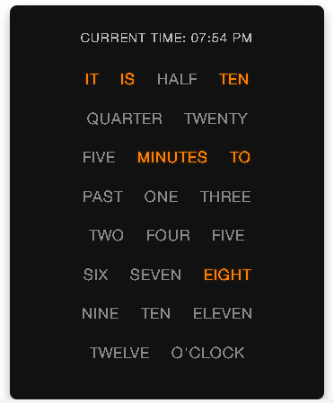
A creative visualization that transforms time into natural language - experience time as spoken words rather than digits or clock hands
Source: <https://gist
This week I try to utilize CUDA on my desktop, to support the upcoming activities on heavy geospatial and climate analytics
I bought a Thinkpad T14 Gen 2 AMD (released on August 2022) end of December 2023, it’s second hand with mint condition and standard specification (AMD Ryzen™ 7 PRO 5850U…
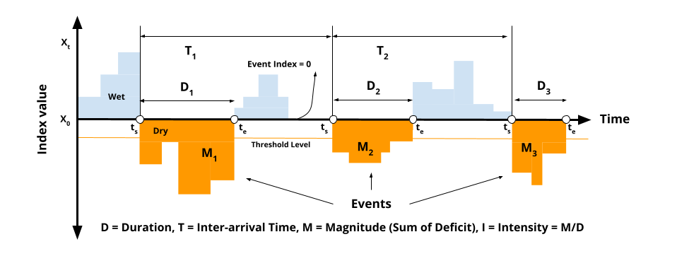
Last month I did experiment test to analyze the propagation of Meteorological Drought (Standardized Precipitation Index - SPI) to Hydrological Drought (Standardized…
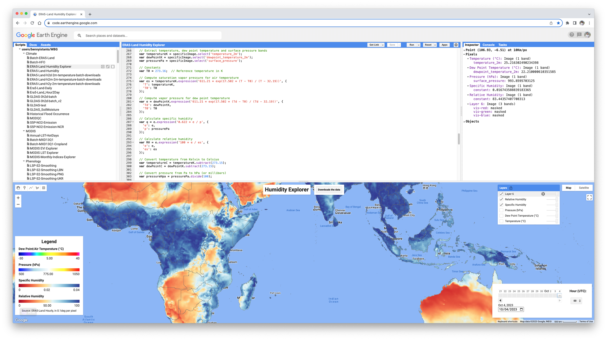
To replicate below code, please download daily climate data from BMKG Data Online <https://dataonline
1 Introduction In the sphere of meteorology, the significance of statistical models in comprehending and forecasting diverse weather patterns is incontestable
This exercise aims to determine the best reduced model (RM) in regression analysis with dummy variables from annual rainfall data and altitude data in three different regions
The Sentinel-1 modified Radar Vegetation Index (RVI) based on Google Earth Engine (GEE) script below originally developed by my friend Jose Manuel Delgado Blasco (Scholar…
1 Introduction In the realm of meteorological studies, the use of statistical models is pivotal for understanding and predicting various weather phenomena
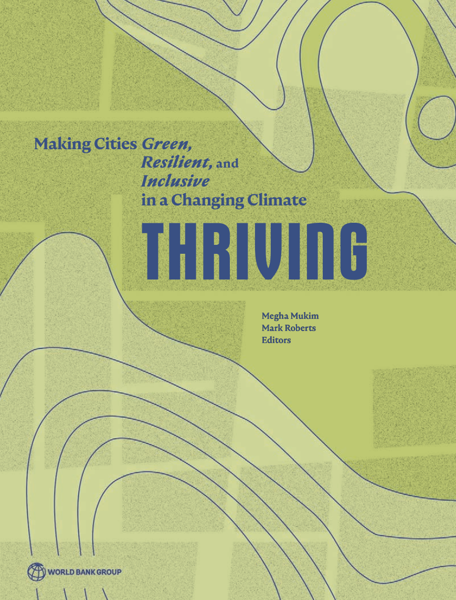
A new World Bank report is launched, in which I had the opportunity to contribute the analysis
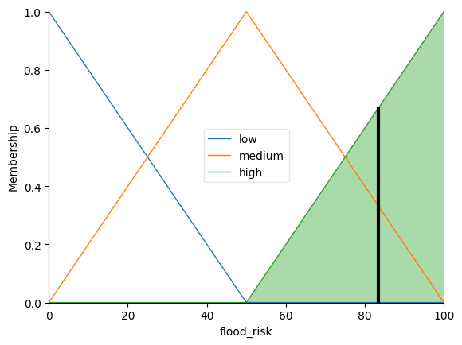
1 Implementation In the implementation phase of this analysis, we utilized Python and the Scikit-Fuzzy library to develop a fuzzy logic-based flood risk assessment model
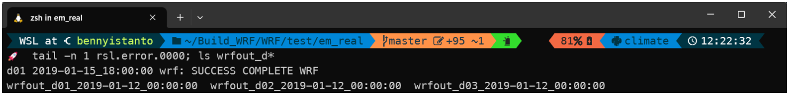
1 Introduction The Weather Research and Forecasting (WRF) model is a powerful numerical weather prediction system used to simulate atmospheric phenomena at various scales
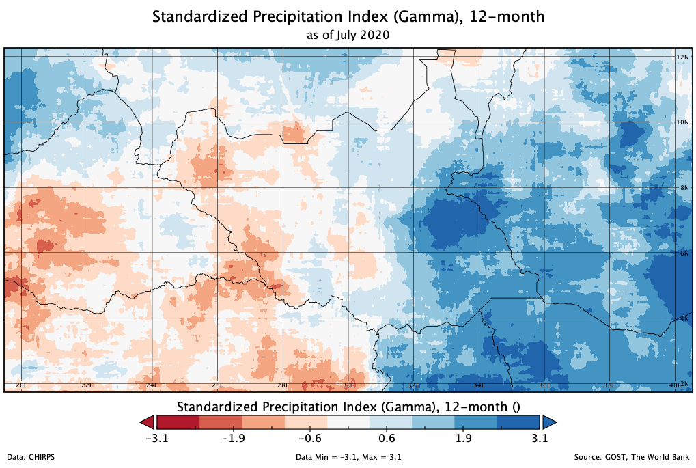
I am excited to share some news with you all
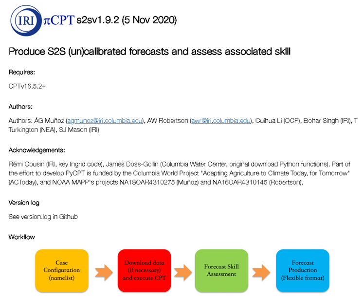
1 Introduction PyCPTis a Python library for statistical analysis and forecasting of climate data
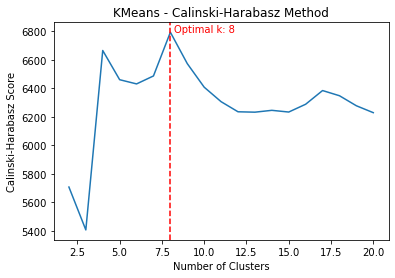
Climatological rainfall zones represent distinct areas with different rainfall patterns
PyCPT is a Python interface and enhancement for the command line version of the International Research Institute for Climate and Society’s Climate Predictability Tool (CPT)…
Unit hydrographs are a fundamental tool in the analysis of floods and their impacts on watersheds
My fourth-grade daughter recently participated in her school’s market day as part of the IB Primary Years Programme at Sekolah Bogor Raya, and it turned into an inspiring…
UPDATE: 25 Feb 2024 Old version: <https://gist
Climate is a complex system that is affected by a variety of factors, including atmospheric composition, solar radiation, and ocean currents
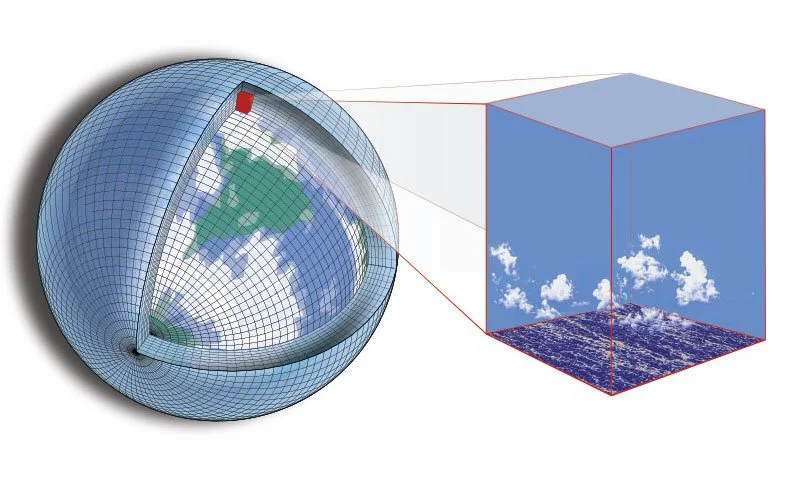
The World Meteorological Organization (WMO), defines a heat wave as five or more consecutive days of prolonged heat in which the daily maximum temperature is higher than the…
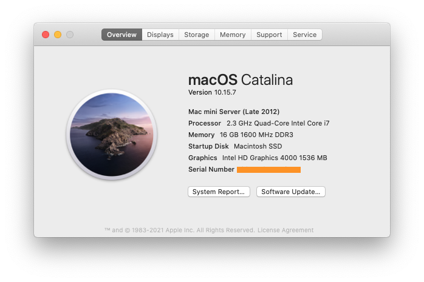
I never owned a Thinkpad before, but I used Thinkpad since 2008, T400 version from my office, and every 2-3 years got upgrade to the latest
Have you ever had a problem when you wanted to download the entire data of an ImageCollection from Google Earth Engine (GEE), but you were lazy and bored when you had to…
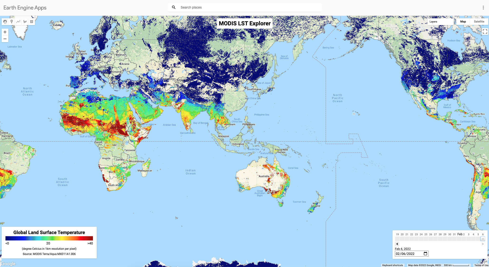
Recently I worked on utilising daily MODIS LST (MOD11A1) to calculate number of day in a year with LST exceeding 35degC
I frequently used the Global Precipitation Measurement (GPM) - next-generation of the Tropical Rainfall Measuring Mission (TRMM - <https://pmm
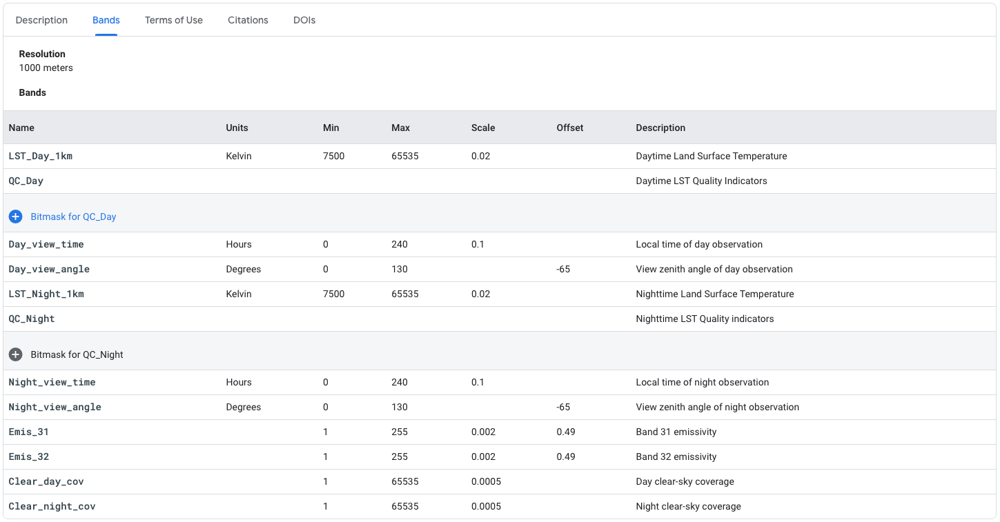
This week I got request from my colleagues to calculate mean annual temperature and number of hot days in a year using MODIS Daily Land Surface Temperature (LST) data from…
Last month, I have a chance to give a try TerraClimate data from Climatology Lab of University of California, Merced
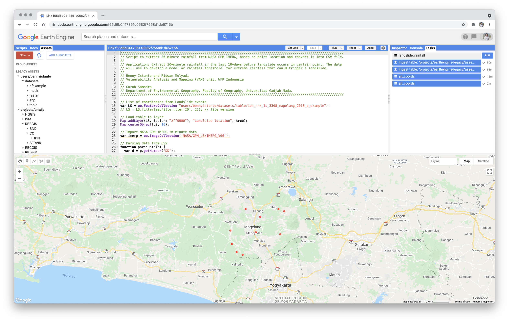
The need for the availability of 30-minutes rainfall time series data are very crucial, especially when we are working on the study of extreme rainfall induced landslide
This week I learned a new thing, create a layout and automatically export to PNG files from various datasets using QGIS
As you may have heard, I’m moving on to the World Bank HQ after 9 wonderful years at the UN WFP in Indonesia
[caption id=“” align=“alignnone” width=“2500”]
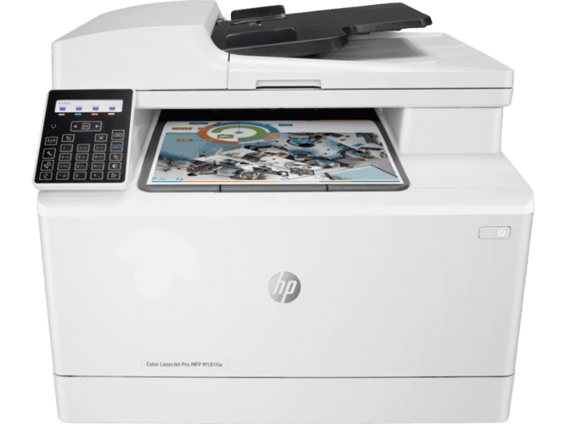
I bought printer HP Color Laserjet Pro MFP M181fw and a set spare original HP 204A catridges not long after I started to work from home due to COVID-19 pandemic situation
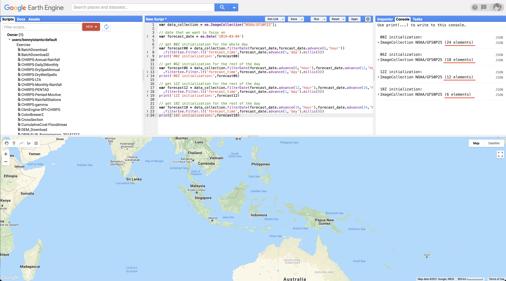
Few days ago I wrote a post on how to get GFS data using GRIB filter and NCAR/UCAR Research Data Archive
Last week, Tropical Cyclone Seroja hit eastern part of Indonesia and Timor-Leste
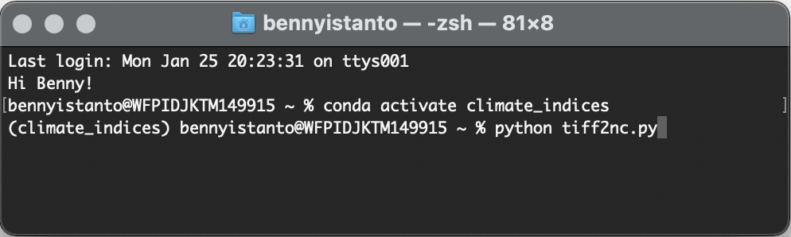
NOTES - 1 Mar 2022 I have write a new and comprehensive guideline on SPI, you can access via this link <https://bennyistanto
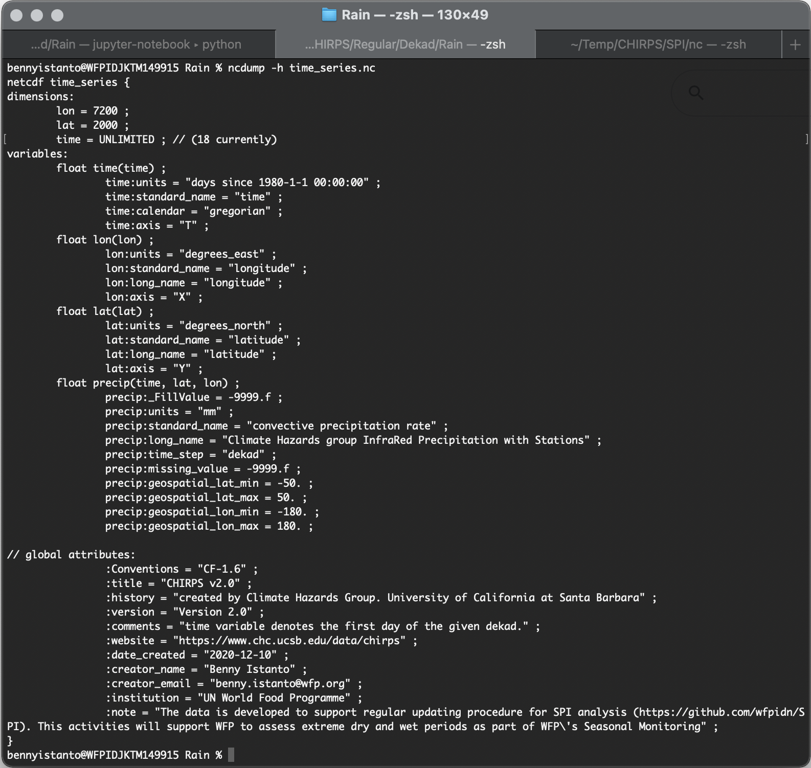
UPDATE: as of 4 January 2024 1
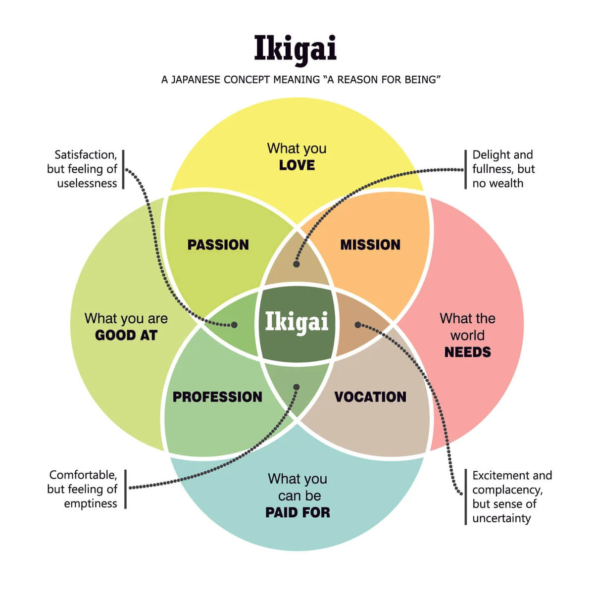
According to Wikipedia, Ikigai (生き甲斐) (pronounced [[ikiɡai]](https://en
For the month of November, Topi Tjukanov announced a 30 Day Map Challenge on Twitter
General sensitivity of rainfall in Indonesia to sea surface temperature (SST) changes in NINO-4 region
I have automatic weather station coordinates from BMKG, along with example data on precipitation accumulation for 1 - 10 Jan 2017 in csv format with column structure: Lon…
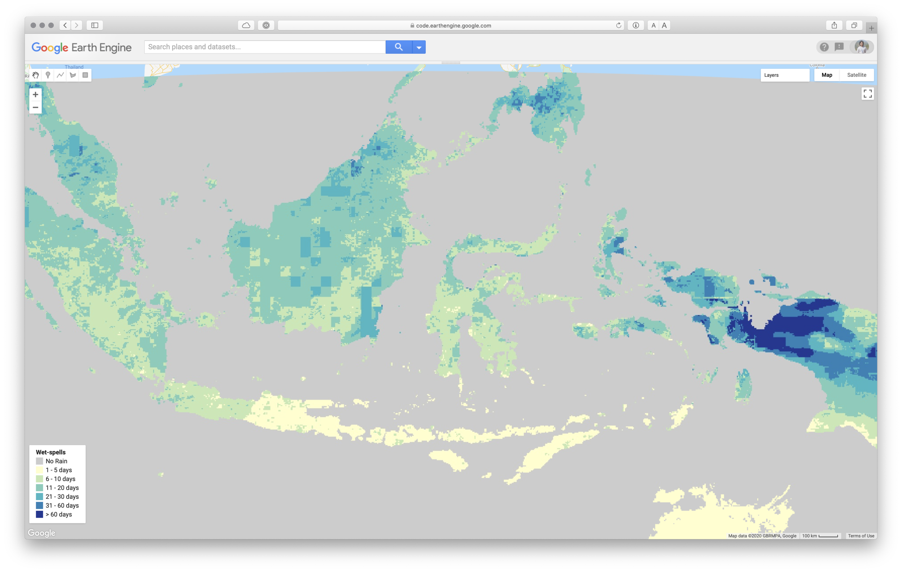
Now, it’s easy to get statistics information on AVERAGE, MINIMUM and MAXIMUM number of consecutive dry and wet days for a certain period using Google Earth Engine platform
Since 2015, considerable amount of new data (high resolution satellite-based product combined with social media data) developed using new technology through artificial…
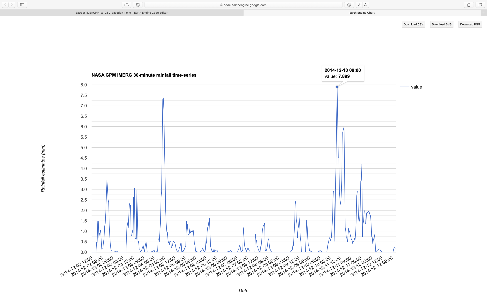
Jemblung Landslide - Banjarnegara 2014 Landslide occured on 12 Dec 2014 in Jemblung of Sampang village, Karangkobar sub-district, Banjarnegara district, Central Java (109
Inspired from Dr
[caption id=“” align=“alignnone” width=“958”]
Trip to Port Vila - Vanuatu last week was my first trip to Pacific Islands
BPS (Statistics of Indonesia) release: paddy harvested area of 2019 was estimated around 10,68 million Ha
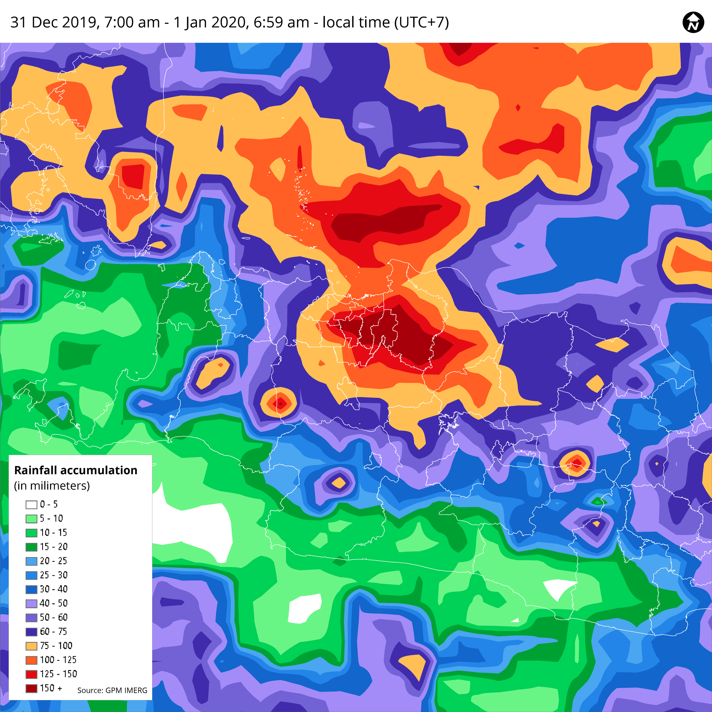
For the last 6 weeks, I am working with my colleagues in Bangkok and Dili to produces climate monitoring bulletin related to dry season in the last 2019 and start of rainy…
Shortly after finishing workshop in Rome, I flew to Munich to attend a workshop in 29 October 2019 with Earth Observation Centre at Deutsches Zentrum für Luft- und Raumfahrt…
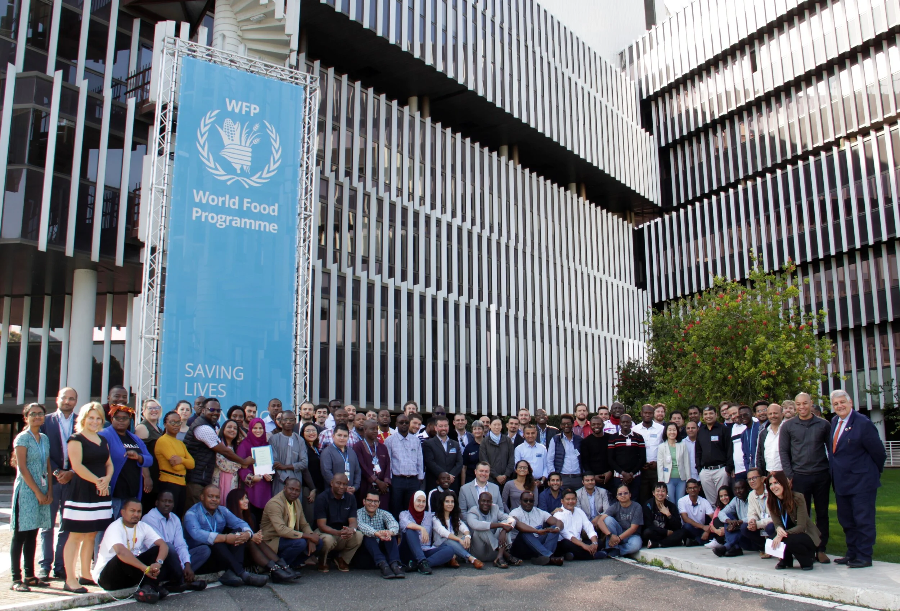
Right after following the innovation bootcamp in SF, I flew to Rome to attend WFPs Global GIS Workshop
Last month I had the opportunity to attend 2019 WFP Innovation Accelerator Bootcamp in San Francisco, CA, USA
Last week I went to Rome for a workshop and a task force meeting
Last week I wen to Beijing for a technical engagement workshop on emergency preparedness and response at National Disaster Reduction Centre of China (NDRCC) office
General sensitivity of rainfall to sea surface temperature (sst) changes in NINO region Climate variability directly influences many aspects of food and nutrition security…
I visited Mongolia again last week during Summer season, it was nice
The current state of a volcano is extremely variable with time and it has no meaning to define fixed risk zones around volcanoes (e
Last week, I had the opportunity to visit Mongolia
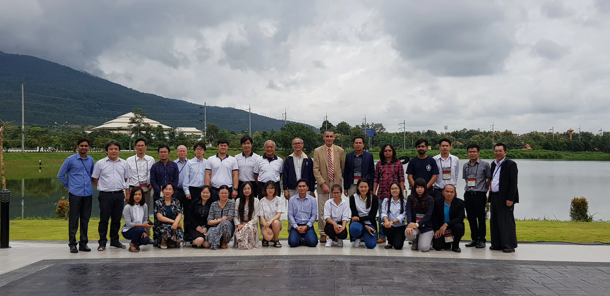
Last month, I attended training on DSSAT and MWCropDSS: Efficient and precision agricultural resource utilization under changes with simulation models and GIS in Chiang Mai…
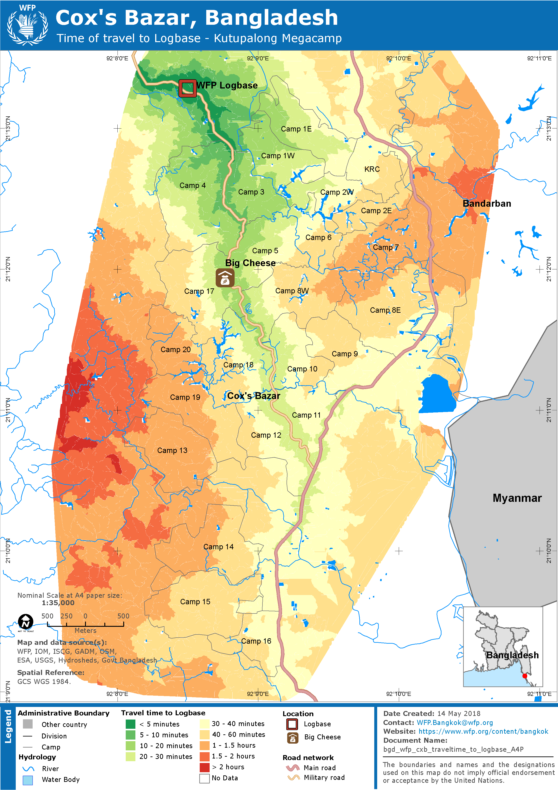
Following my visit to Rohingya camps in Cox’s Bazaar - Bangladesh two-months ago, I try to apply accessibility modeling to help understand on how well covered is Kutupalong…
Two-weeks ago I visited Rohingya refugees camp in Cox’s Bazaar, Bangladesh to conduct the feasibility study of 72hrs approach related to the exposure of Rohingya refugee…
Last month I was invited by my alma mater to an academic workshop which aims to (i) evaluate the curriculum for the period (2013-2017), (ii) develop a curriculum that is…
Today we celebrate the VAMPIRE project, won the 2017 WFPs Innovation Challenge
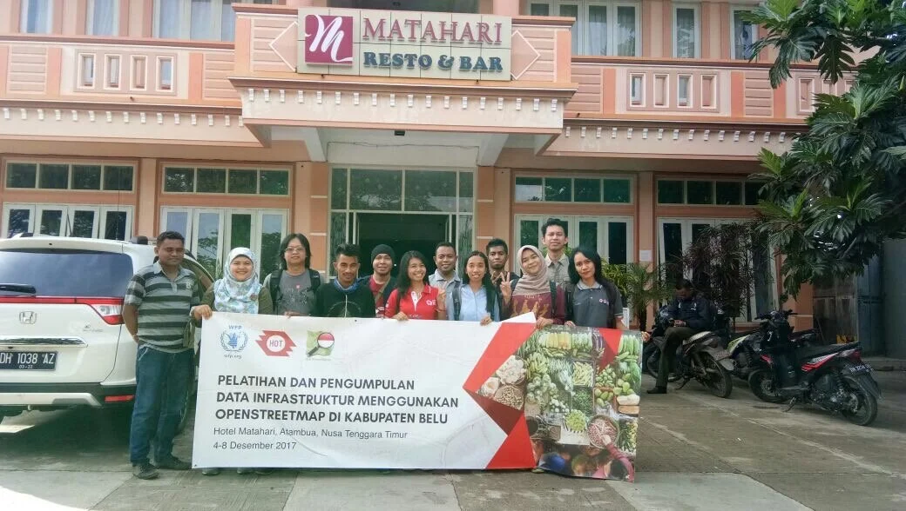
My office frequently conduct an OpenStreetMap (OSM) Mapathon series, to improve the quality and speed of disaster preparedness, response and recovery in Indonesia through…
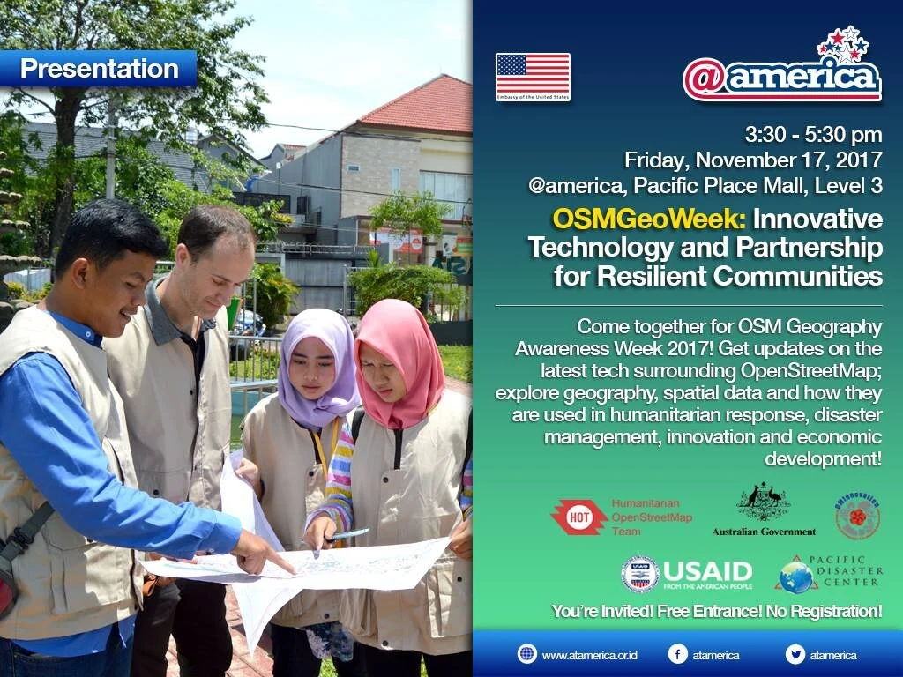
November 12–18 is OSM Geography Awareness Week
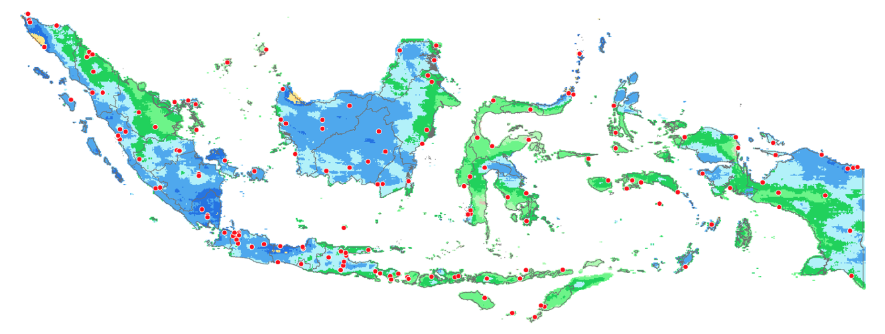
Blending of point and grid data I have some station data
This post updated regularly, so if you couldn’t find what you are looking for, comeback later or send me an email
Lagi rame tentang angka 7 juta :) Masih terkait dengan metode perhitungan yang cocok untuk standing crowd density pada 2 Desember di Monas dan sekitarnya, saya mencoba…
Climate and vegetation data sourced from remote sensing satellites are widely used for agricultural monitoring
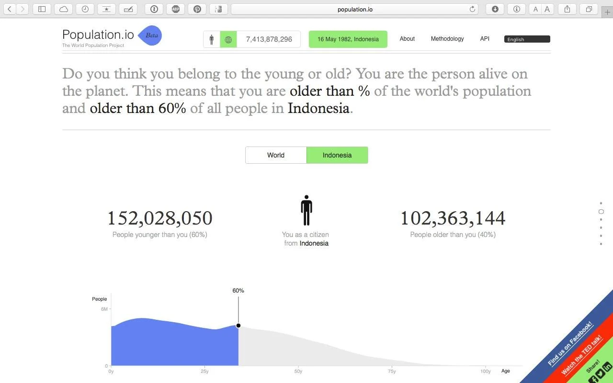
What’s my place in the world population
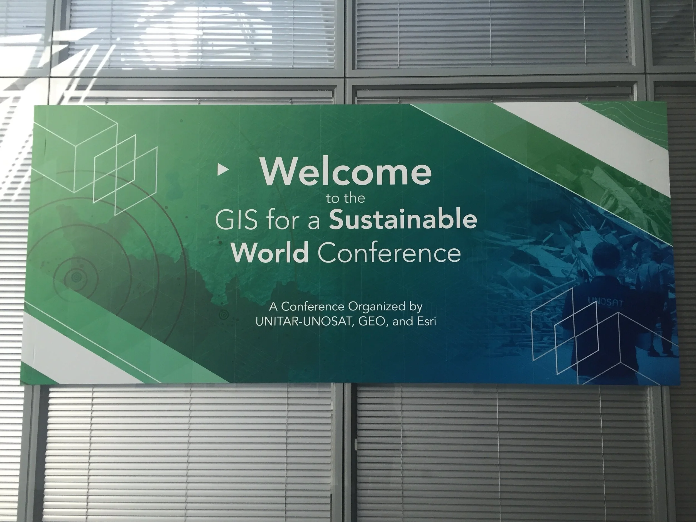
Early this month I had the opportunity to attend the 2016 GIS for a Sustainable World Conference held on May 2–4, 2016 in Campus Biotech, Geneva, Switzerland
Have you heard about Aerial Bold
San Diego Convention Center 20 – 24 July 2015, San Diego, CA, USA
OpenStreetMap (OSM) is a collaborative project to create a free, editable map of the world
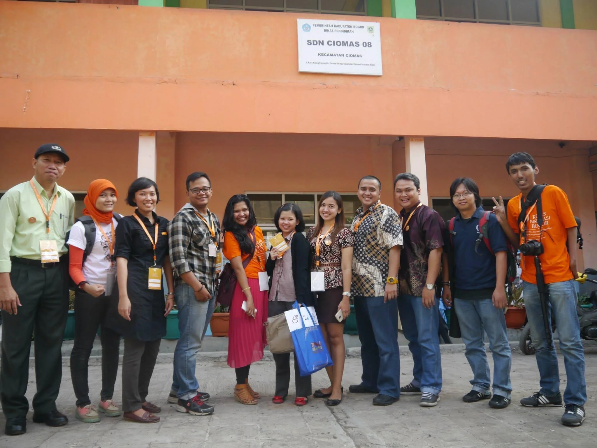
Last week, on 9 Sep 2014 I participated in Kelas Inspirasi Bogor - part of Indonesia Mengajar activities
Beberapa bulan terakhir saya banyak menggunakan GDAL/OGR untuk melakukan clip dan translate data satelit
I found excellent Image-compositing scripts for filtering weather out of satellite images <https://github
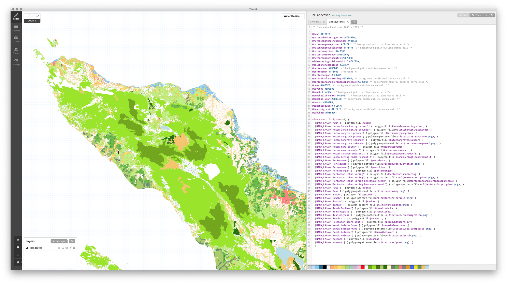
After few months playing around with TileMill and TileStream, I have created few MBTiles map using data from my previous and current project
ArcGIS menginstal versi Python-nya sendiri yang tidak terdaftar secara resmi di sistem Windows tetapi pada kenyataannya dapat digunakan seperti layaknya Python melalui…
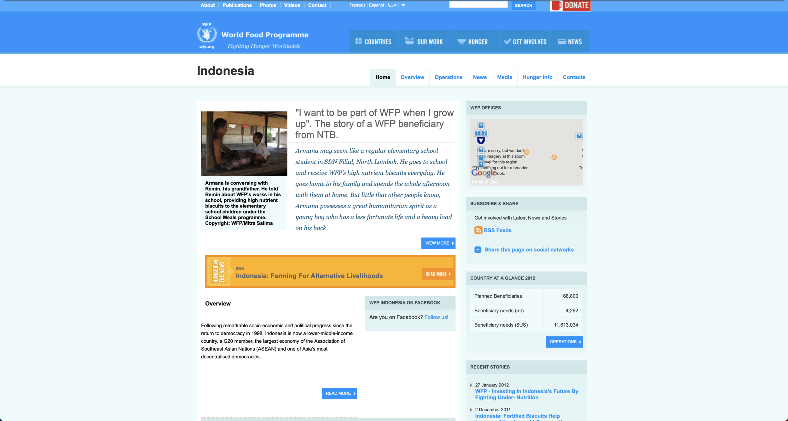
Today is my first day working at World Food Programme, Indonesia Country Office and based in Jakarta
Tangse adalah sebuah kecamatan di Kabupaten Pidie, Aceh, Indonesia
Since it was announced through Development Seed’s blog, I am really excited to try TileMill and TileStream
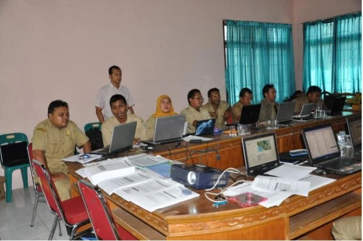
This the last part of 3 series post on ILO Basic Operational GIS for Road Assessment
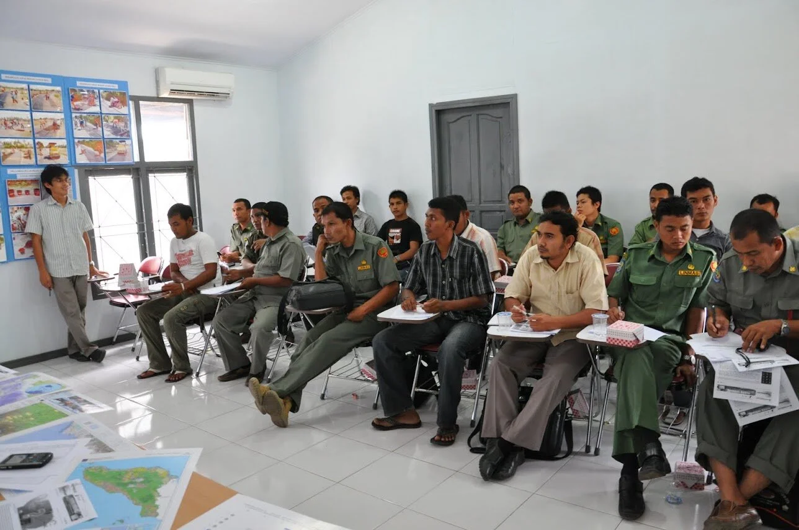
This the second part of 3 series post on ILO Basic Operational GIS for Road Assessment
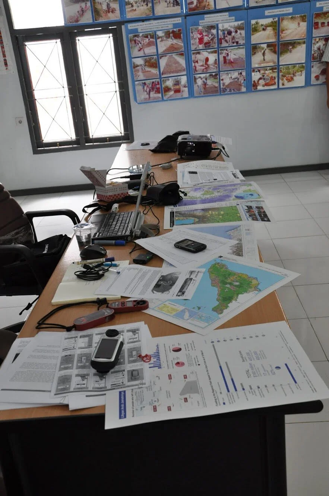
This the first part of 3 series post on ILO Basic Operational GIS for Road Assessment
Starting from 1 February 2011, I am back to Aceh again
Information Management in Emergency Situation During post-disaster emergency response, the role of information management is highly important
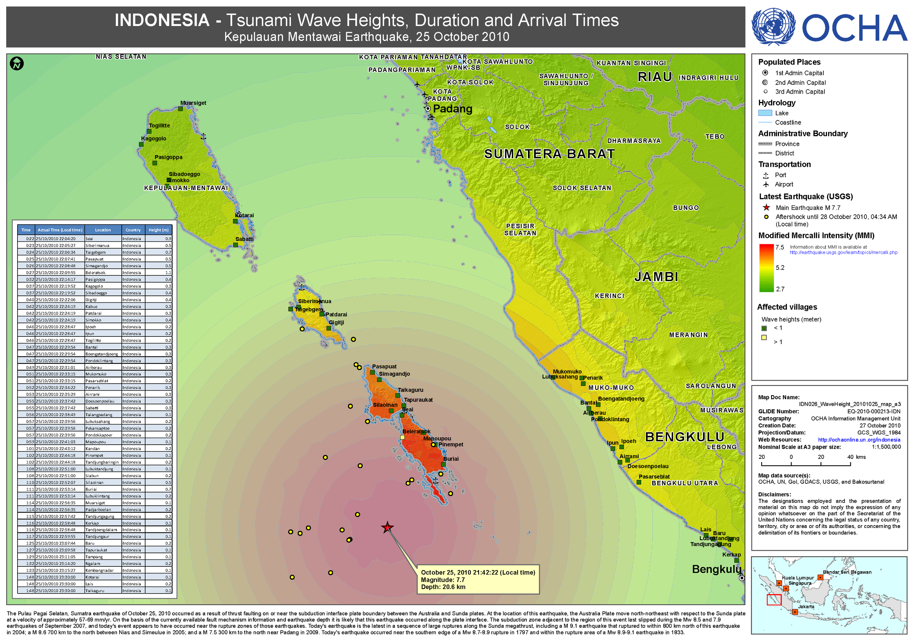
25 October 2010 - 21:42, that night I was in my room (Agus Salim stadium complex) working on map requested by Ignacio Leon - Head of OCHA Indonesia
Almost 5-months I have been working for UNOCHA as GIS Officer to support earthquake response that happen in West Sumatra, 30 Sep 2009
This training was part of ADB’s ETESP Package 39 Part 2 project and was carried out last month, which was attended by staff from Aceh’s Forestry and Plantation Office
Since May 2009 I am working for UNFPA as Census Mapping Supervisor in Timor-Leste supporting Direksaun Jeral de Estatistika (DNE) conducting landmark survey as preparation…
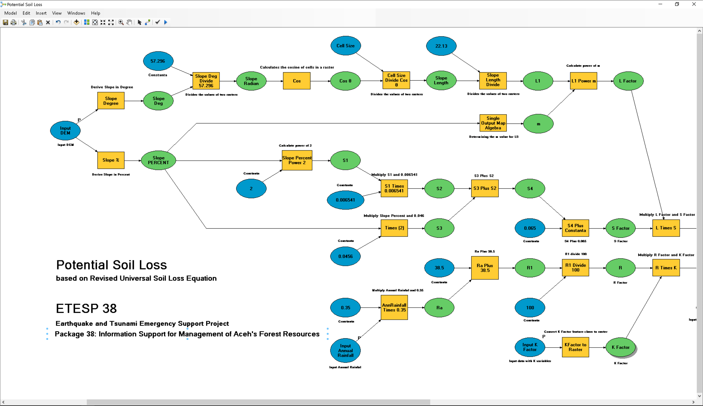
During my assignment with ADB project called Earthquake and Tsunami Emergency Support Project (ETESP) - Package 38, I am working on development of potential soil loss map
Agriculture is one of the important sectors in Indonesia so that the various efforts related to development in agriculture continues to be done, especially paddy
User interface model simulasi penyakit busuk daun (late blight) pada tanaman kentang (Solanum tuberosum L
In the last 4-months I have been working for USAID funded project as a GIS Consultant on Immunization for 64 districts in 7 provinces in Indonesia
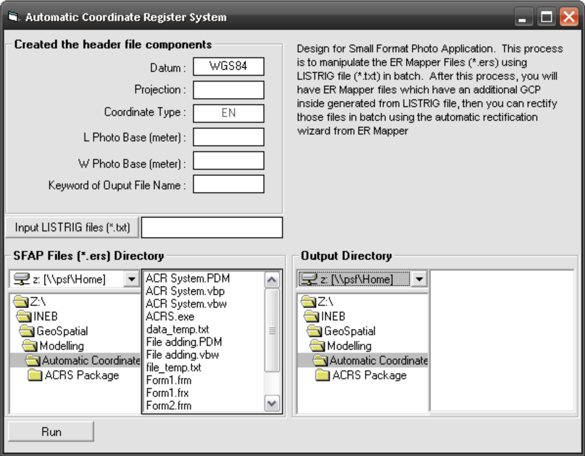
Image registration is the process of transforming different sets of data into one coordinate system
Minggu lalu saya mengikuti Pertemuan Ilmiah Tahunan XV dan Kongres IV Masyarakat Ahli Penginderaan Jauh Indonesia (MAPIN), yang diadakan di Bandung, 13 - 14 Desember 2006
LAPAN secara rutin melakukan pemantauan Sistem Peringkat Bahaya Kebakaran (SPBK/FDRS - Fire Danger Rating System) berbasis data satelit
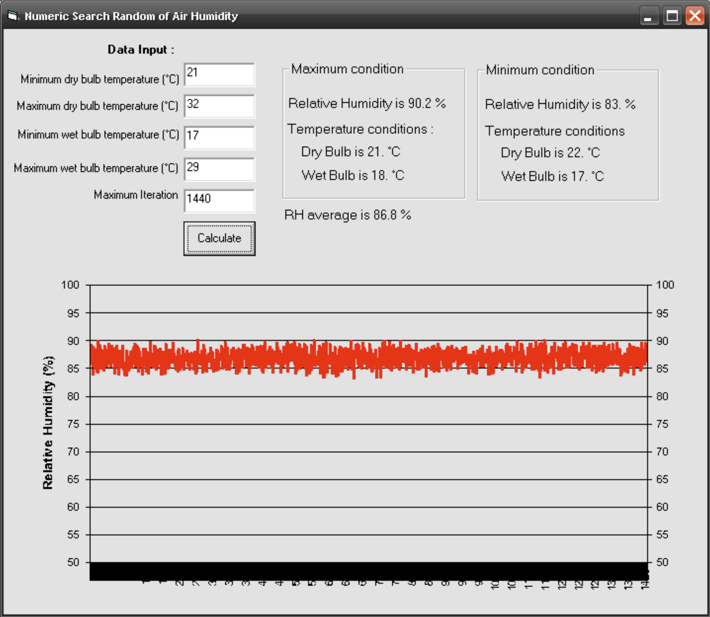
Problem
FWI Excel program add-in is a quick and easy way to calculate the fire weather index into a table in Microsoft Excel, hereinafter known as XLFWI add-ins
Hari ini saya dinyatakan lulus program sarjana Meteorologi - FMIPA IPB, setelah tadi siang saya menerima Surat Keterangan Lulus (SKL)
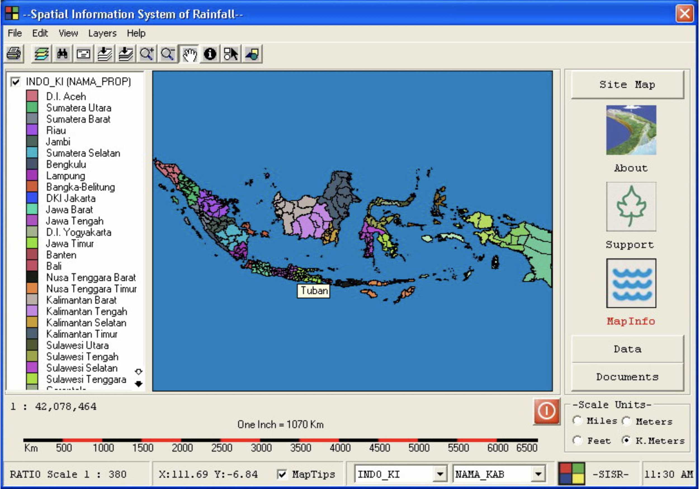
Pada tanggal 27 Juni 2004, saya memulai magang di Laboratorium Teknologi Geosystem, Pusat Pengkajian dan Penerapan Teknologi Inventarisasi Sumber Daya Alam (P3-TISDA), BPPT…
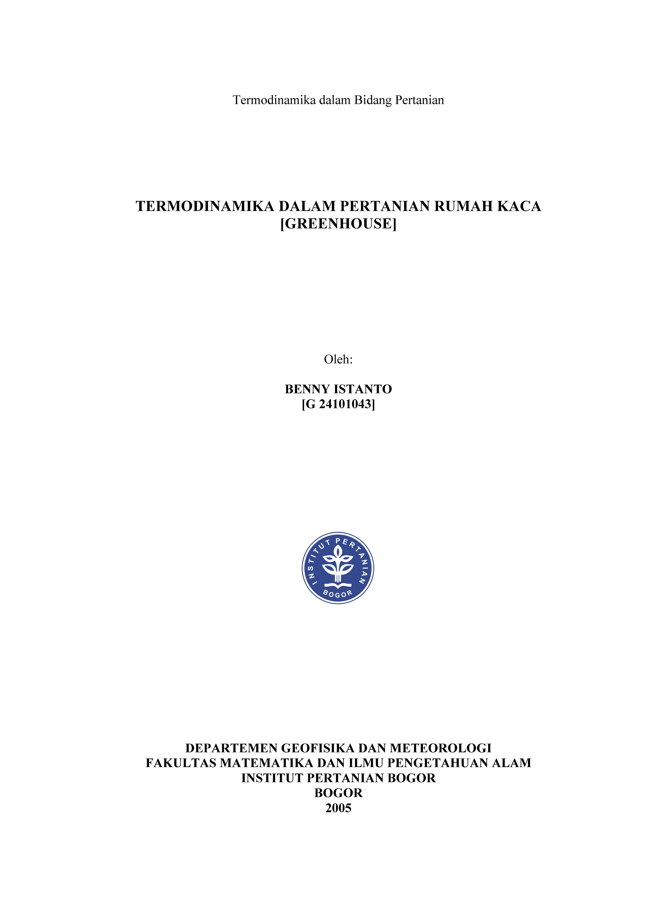
Makalah berikut merupakan tugas dari mata kuliah Termodinamika di semester 4, dibimbing oleh Hanedi Darmasetiawan
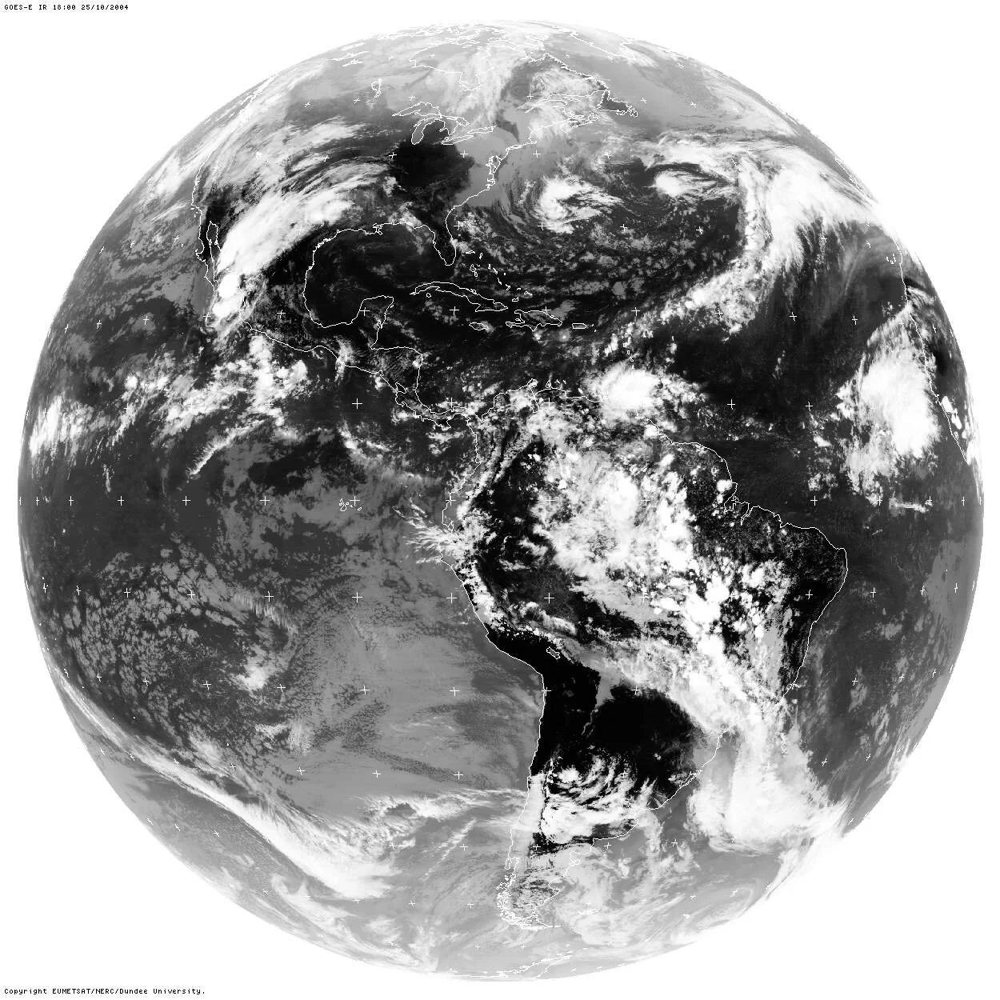
Mengamati bumi melalui satelit Geostasioner (GOES EAST, METEOSAT, IODC, GMS dan GOES WEST) tanggal 25 Oktober 2004, Jam 18
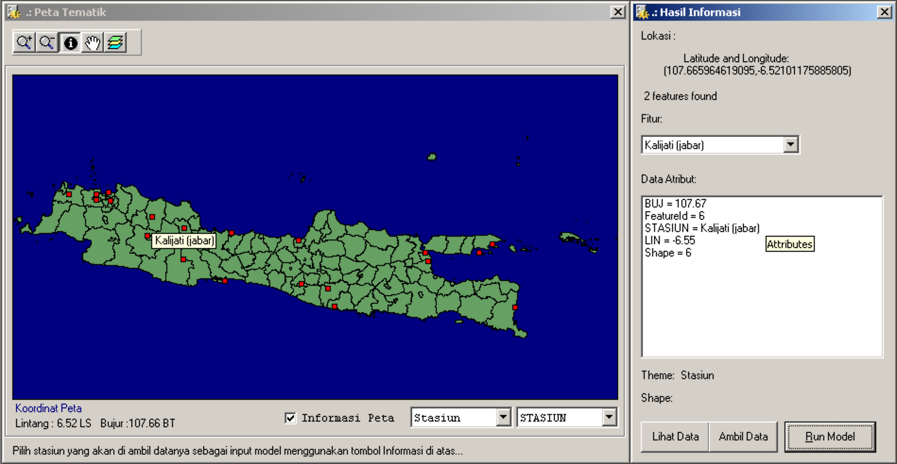
Model ini merupakan tugas akhir mata kuliah Model Simulasi Pertanian di Semester 6
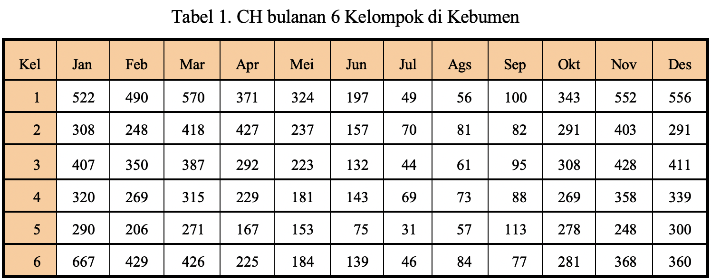
Makalah berikut merupakan tugas dari mata kuliah Klimatologi Pertanian di semester 6, dibimbing oleh Rizaldi Boer
Ini adalah salah satu tugas praktikum dari mata kuliah Model Simulasi Pertanian yang diberikan oleh Pak Handoko dan Pak Yon Sugiarto
Mata kuliah Mikrometeorologi membuat saya dan teman-teman melakukan pengamatan cuaca selama 24 jam di halaman Kampus IPB Baranangsiang, sangat menyenangkan karena waktu…
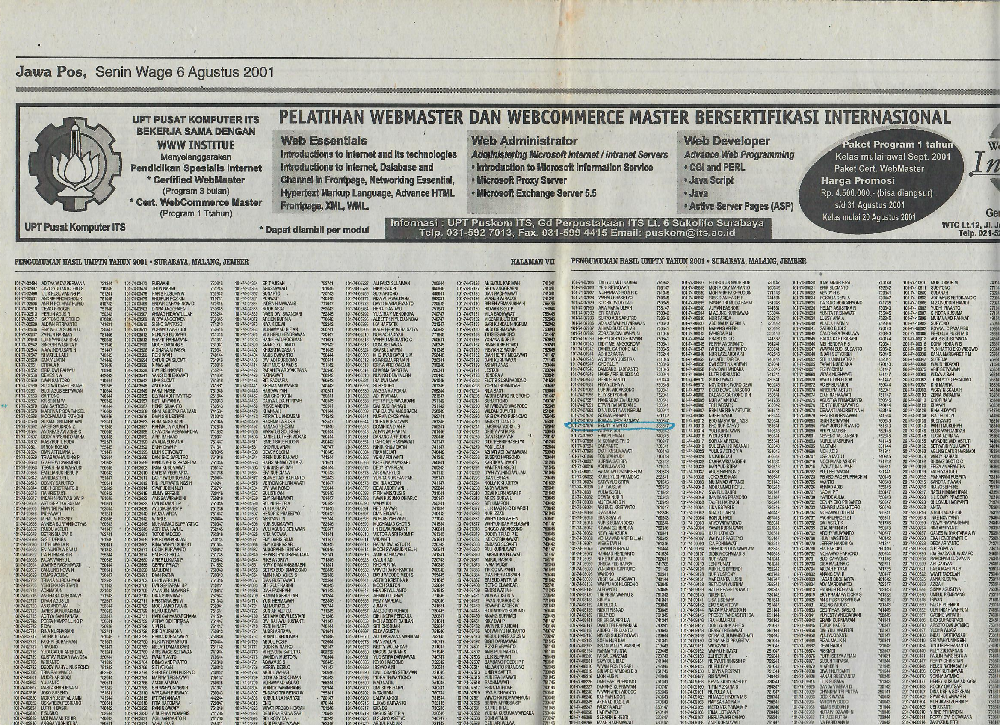
Di kampus lagi sering ledek-ledakan antara mahasiswa yang masuk IPB lewat jalur USMI dan UMPTN
Makalah berikut merupakan tugas dari mata kuliah Mekanika di semester 4, dibimbing oleh Hanedi Darmasetiawan
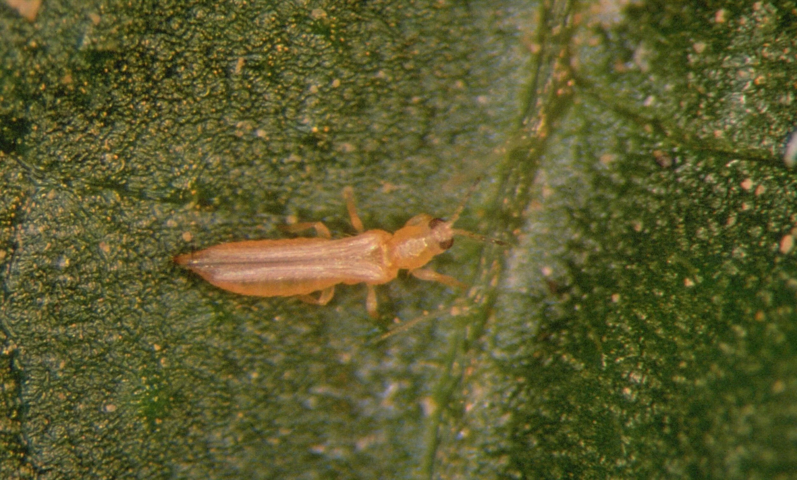
Makalah berikut merupakan tugas dari mata kuliah Dasar Agronomi di semester 3
Makalah berikut merupakan tugas dari mata kuliah Metode Observasi dan Instrumentasi Cuaca di semester 3
Minggu kemarin kita melakukan praktikum mata kuliah Hidrometeorologi tentang pendugaan distribusi ukuran butir hujan pada berbagai kondisi atmosfer, awal atau akhir hujan
Hari ini saya memulai sebuah blog, dan ini tulisan pertama saya